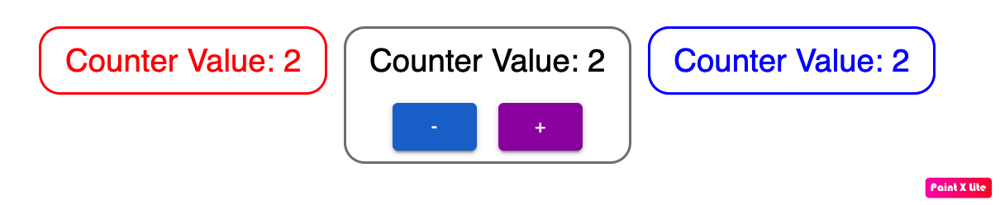

// 1️⃣ Define the store's shape - store contains both state and actions;
interface CounterStoreType {
count: number;
getCount: () => number;
increase: () => void;
decrease: () => void;
}
// 2️⃣ create() is used to create the store;
// set function is used to set initial state and actions;
const useCounterStore = create((set, get) => ({
count: 0,
getCount: () => get().count,
/*
When you call set((state) => ({ count: state.count + 1 })), Zustand:
Reads the current state.
Applies your update.
Notifies all React components using the store, so they re-render automatically.
*/
increase: () => set((state) => ({ count: state.count + 1 })),
decrease: () => set((state) => ({ count: state.count - 1 })),
}))
export default useCounterStore
import React from 'react'
import useCounterStore from '../store/counterStore'
import { Box, Typography } from '@mui/material'
const Component1: React.FC = () => {
// Another way get to get state;
const count = useCounterStore((state) => state.count);
return (
<Box
sx={{
border: '2px solid red',
borderRadius: '16px',
p: 1,
textAlign: 'center',
width: '100%',
}}
>
<Typography variant="h5" color="red">
Counter Value: {count}
</Typography>
</Box>
)
}
export default Component1
import React from 'react'
import useCounterStore from '../store/counterStore'
import { Box, Button, Typography, Stack } from '@mui/material'
const Component2: React.FC = () => {
const { getCount, increase, decrease } = useCounterStore();
return (
<Box
sx={{
border: '2px solid gray',
borderRadius: '16px',
p: 1,
textAlign: 'center',
width: '100%',
}}
>
<Typography variant="h5" sx={{ mb: 2 }}>
Counter Value: {getCount()}
</Typography>
<Stack direction="row" spacing={2} justifyContent="center">
<Button variant="contained" color="primary" onClick={decrease}>
-
</Button>
<Button variant="contained" color="secondary" onClick={increase}>
+
</Button>
</Stack>
</Box>
)
}
export default Component2
import React from 'react'
import useCounterStore from '../store/counterStore'
import { Box, Typography } from '@mui/material'
const Component3: React.FC = () => {
// Another way to read state
const count = useCounterStore((state) => state.getCount());
return (
<Box
sx={{
border: '2px solid blue',
borderRadius: '16px',
p: 1,
textAlign: 'center',
width: '100%'
}}
>
<Typography variant="h5" color="blue">
Counter Value: {getCount()}
</Typography>
</Box>
)
}
export default Component3
import React from 'react'
import { Container, Grid } from '@mui/material'
import Component1 from './components/Component1'
import Component2 from './components/Component2'
import Component3 from './components/Component3'
const App: React.FC = () => {
return (
<Grid container spacing={4} justifyContent="center">
<Grid item xs={12} sm={4}>
<Component1 />
</Grid>
<Grid item xs={12} sm={4}>
<Component2 />
</Grid>
<Grid item xs={12} sm={4}>
<Component3 />
</Grid>
</Grid>
</Container>
)
}
export default App
Output
